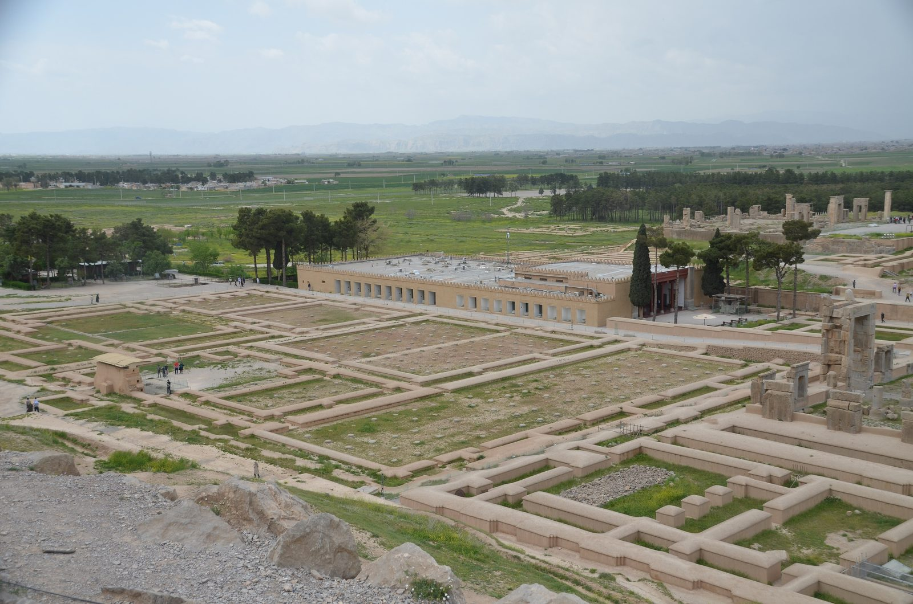
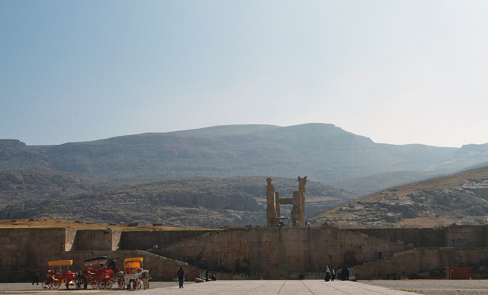
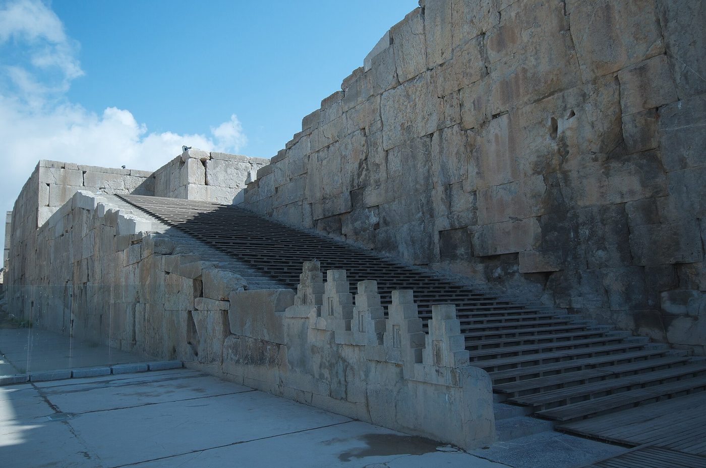
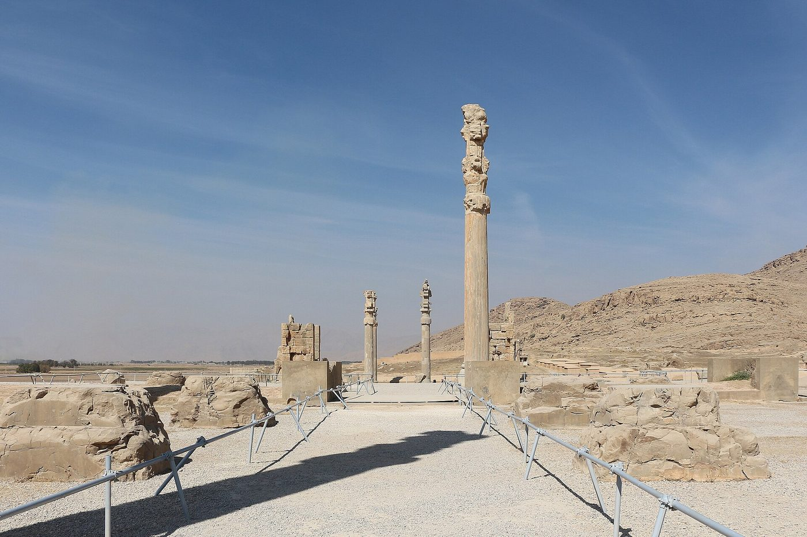
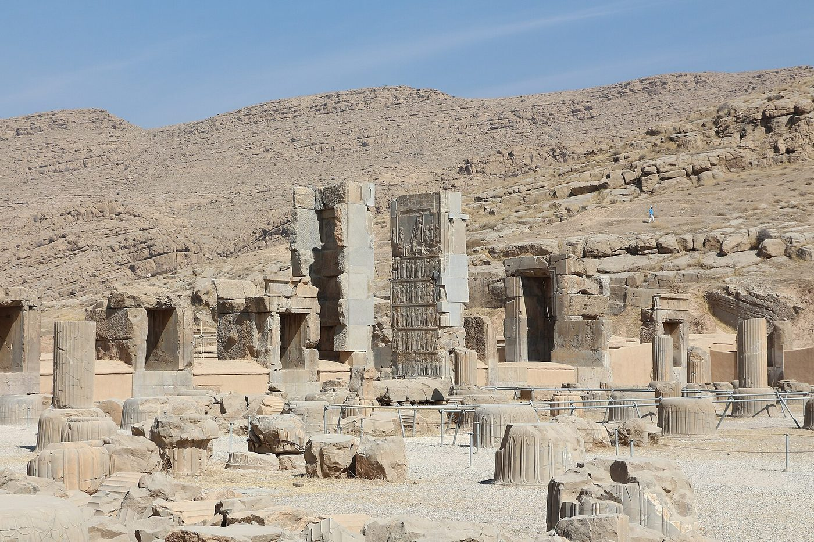
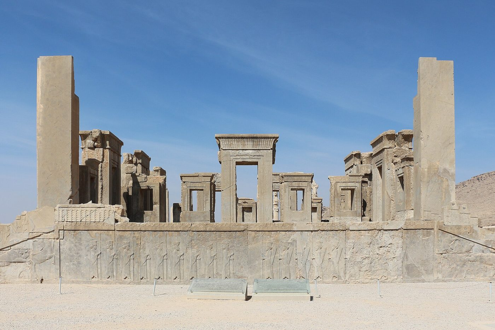
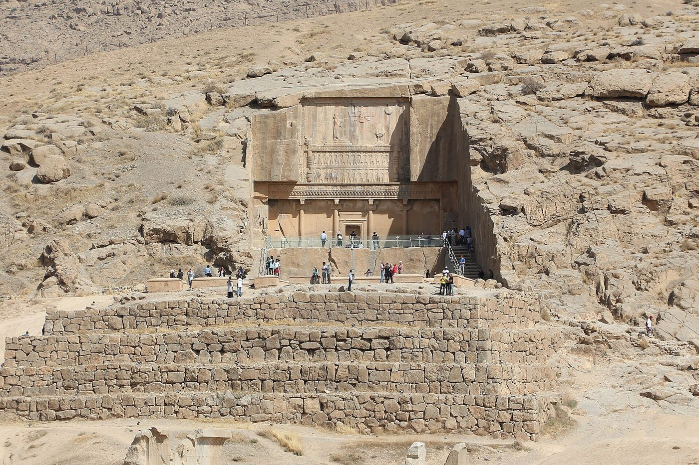
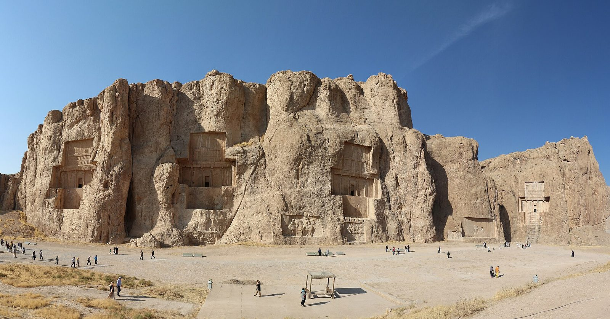
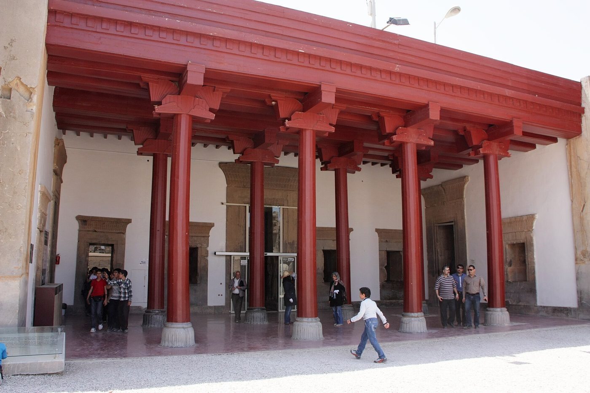
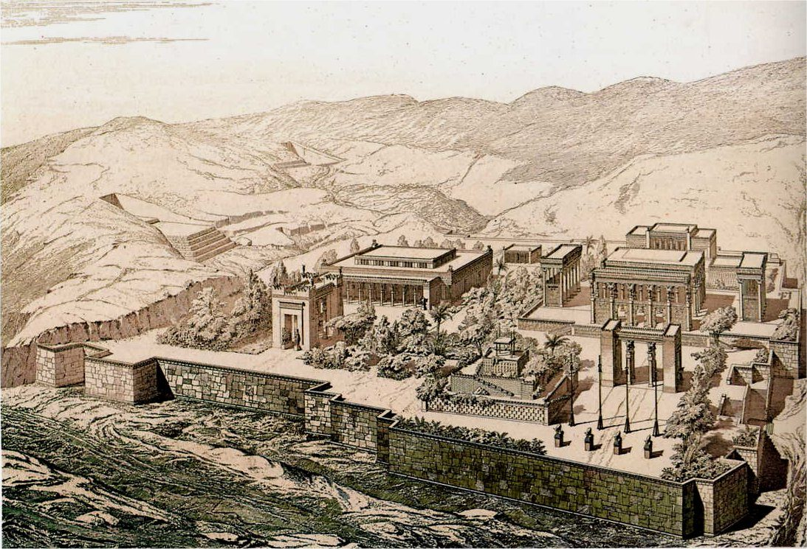

Unit 2 · Persepolis · Lesson 5
The layout and features of the city
How did the plan of the terrace put the power of the Persian king on show?
Year 11 Ancient History · Present with → or space · Read on a phone with R

Review · books closed · 6 minutes · press K for the timer
Five questions from Lessons 1–4
- Why does it matter that Persepolis was built in Fars (Pārsa)? Fars was the homeland of the Persians and of the Achaemenid royal family, so the new capital tied the king’s power to his own people’s land (Cyrus’s capital, Pasargadae, was nearby too).
- In his inscription on the terrace wall (DPf), what does Darius claim? That by the grace of Ahuramazda he built a palace on this terrace, “on a place where no palace had been built before” (DPf, Livius translation). It is the king’s own claim about his own work.
- Cornelis de Bruijn’s drawings of the ruins: when were they made, and what are they reliable for? Drawn on his visit in 1704–05 and published in 1711. Reliable for what the ruins looked like about 1704; less reliable for details he could not see or chose to restore.
- Name one thing found or done by Herzfeld’s expedition and one by Schmidt’s. Herzfeld (1931–34): uncovered the Apadana’s eastern stairway; his team found the gold and silver foundation tablets (found by his architect Krefter) and the Fortification Tablets, both in 1933. Schmidt (1935–39): excavated the Treasury; took aerial photographs; published Persepolis I–III.
- Give one continuity from Pasargadae to Persepolis. Columned halls; or guardian figures at a gateway (Gate R at Pasargadae; the great bulls of the Gate of All Nations at Persepolis, which you meet today).
Mark your own answers in a different colour. Which question did you find hardest?
Learning intentions and success criteria · 2 minutes
Today’s goals
- Understand the layout and main features of Persepolis
- Analyse how the layout expressed royal power
- label the main buildings and zones of the terrace
- explain the purpose of three features
- use three features as evidence in a paragraph about royal power
Syllabus outcomes: AH-11-03 explains the role and significance of forces, features, events, individuals and groups in shaping the past · AH-11-05 analyses different types of sources for evidence to support a historical account or argument · AH-11-07 communicates historical understanding, applying historical knowledge, terms and concepts. Life Skills: AH-LS-05 describes features of places or societies in the ancient world · AH-LS-06 investigates people, events or developments of the ancient world.
Note-making · the routine for the whole course
How to structure your notes
questions and key terms, written after
short phrases, arrows (→ leads to), abbreviations (c. = about; BCE = Before the Common Era)
- 1Rule up the page firstA cue column about a quarter of the page wide; title and date at the top; room for a summary at the bottom.
- 2Listen and look, then writeDon’t copy while a slide is being explained. Phrases, not sentences.
- 3Write your own notes at each ✎ checkpointThen compare with the model notes, one row at a time. Add what you missed in a second colour.
- 4Write the cue questions afterwardsUse exam verbs: explain, analyse, assess. To revise, cover your notes and answer the cues.
- 5Finish with a three-sentence summaryTwo checkpoints today: the terrace and the walk · zones and interpretations. Your labelled plan goes beside your notes.
Key vocabulary · add to the unit word wall
Words for reading a site plan
| The site | Meaning |
|---|---|
| Terrace | The huge raised platform on which the buildings of Persepolis stand. |
| Takht-e Jamshid | ‘Throne of Jamshid’ — the local Persian name for the ruins, after a legendary king. |
| Apadana | The great columned audience hall of Persepolis, begun by Darius I. |
| Hypostyle hall | A hall whose roof is held up by many columns. |
| Reading the site | Meaning |
|---|---|
| lamassu | A guardian figure from Assyria and Babylonia: a winged bull with a bearded man’s head, placed at gateways. |
| geophysical survey | Mapping what lies under the ground with instruments (for example, by measuring the soil’s magnetism), without digging. |
| Reconstruction | A modern rebuilding or picture of how something looked — evidence of what its maker imagined, not direct evidence of the past. |
1 · The terrace · I do
A city built on a platform

- What: an artificial terrace about 450 × 300 metres, partly cut from the rock of the mountain behind it (Kuh-e Rahmat) and partly built up with huge stone blocks; its walls rise high above the plain (published heights vary with the slope of the ground, from about 4 to 18 metres)
- When: begun about 518 BCE by Darius I; later kings kept adding buildings until the 330s BCE
- Under it: a network of channels and tunnels cut into the rock to carry away rainwater
- Around it: walls and towers, especially on the east, facing the mountain
We will follow the entrance built under Xerxes, up the stairway in the north-west. Before that, the main way in was probably from the south.
1 · The terrace · I do — walk the plan as a visiting delegation · stops 1–2
Arriving: the stairway and the Gate

1 · The great double stairway
They saw: two broad flights of very low steps climbing the terrace wall in the north-west (built under Xerxes).
Designed to: slow every visitor down. Livius thinks the low steps meant “… a visitor was automatically forced to proceed in a dignified way”.

2 · The Gate of All Nations
They saw: a square hall at the top of the stairs, also built under Xerxes: giant bulls at the west doorway, human-headed winged bulls (lamassu) at the east; a third door led south.
Designed to: make every visitor pass between guardian figures before reaching the king’s halls.
Images: A. Davey (CC BY 2.0) · 4009dayton (CC BY-SA 4.0). Full details on the last slide.
1 · The terrace · I do — walk the plan as a visiting delegation · stops 3–4
The audience halls

3 · The Apadana
They saw: a square hall at the heart of the terrace, begun by Darius I: 72 columns about 20–24 metres high, on a platform with carved stairways (Lesson 6).
Designed to: receive the empire’s representatives in a space big enough for hundreds of people, under columns that dwarfed them.

4 · The Hall of a Hundred Columns
They saw: the Throne Hall, begun under Xerxes and finished under Artaxerxes I: about 68.5 metres square, entered from the north through a porch guarded by two great stone bulls.
Designed to: give the king a second great hall for audiences; its carved doorways show the king on his throne (Lesson 7).
Images: Bernard Gagnon (CC BY-SA 4.0) · Bernard Gagnon (CC BY-SA 4.0). Full details on the last slide.
1 · The terrace · I do — walk the plan as a visiting delegation · stops 5–6
Behind the halls: palaces and the Treasury

5 · The Tripylon and the palaces
They saw: the Tripylon (“triple gate”) between the two halls, with doors north, east and south; beyond it, to the south, the palaces: the Tachara of Darius I (pictured) and the larger Hadish, built under Xerxes on higher ground.
Probably meant to: keep the king’s own palaces apart from the public halls (an inference from the plan). Was the Tripylon a council hall or just a grand corridor? Scholars disagree.

6 · The Treasury
Most visitors probably never saw: the Treasury, one of Darius I’s first buildings, in the south-east corner beside what Schmidt called the garrison quarters and the towered wall; storerooms along the south, out of sight of the palaces.
Its place: behind walls, away from the halls. Once Xerxes moved the entrance to the north-west, it lay at the back of the terrace.
Images: Bernard Gagnon (CC BY-SA 4.0) · Bernard Gagnon (CC BY-SA 4.0). Full details on the last slide.
1 · The terrace · I do — above and below the terrace
Beyond the terrace: tombs above, a city below


Two finished royal tombs (and an unfinished one) are cut into Kuh-e Rahmat, looking down on the terrace; they belong to later kings. Darius I and, probably, three of his successors lie at Naqsh-e Rustam, about 6 km to the north.
Livius: of the city around the terrace, “… hardly anything has been excavated”. The SELOPERSE team started from this idea, and their surveys (including geophysical survey) supported it:
The city was probably not structured as a densely built-up and populated centre …
SELOPERSE project (University of Bologna, 2012–14), final report summary, European Commission CORDIS
Notes checkpoint 1 of 2
The terrace and the visitor’s walk
2 · The plan · We do — label it together · 5 minutes · press K for the timer
Label the plan: eleven features
| No. | Feature | In a few words |
|---|---|---|
| 1 | great double stairway | the way up, in the north-west |
| 2 | Gate of All Nations | the guarded entrance hall |
| 3 | Apadana | the great audience hall |
| 4 | Hall of a Hundred Columns | the Throne Hall |
| 5 | Tripylon | “triple gate” to the palaces |
| 6 | Tachara | palace of Darius I |
| 7 | Hadish | larger palace, built under Xerxes |
| 8 | the so-called ‘Harem’ | rooms around courts; use debated |
| 9 | Treasury | the king’s storehouse |
| 10 | fortification wall and towers | defence on the east |
| 11 | royal tomb | cut into Kuh-e Rahmat |
2 · The plan · We do — colour the zones · 2 minutes
Colour the zones: what was each part of the terrace for?
- Ceremonial and audience (blue)north: 1 stairway, 2 Gate, 3 Apadana, 4 Hall of a Hundred Columns, 5 Tripylon
- Royal residences (purple)south: 6 Tachara, 7 Hadish (and later, smaller palaces)
- Storage and administration (orange)south-east: 9 Treasury (and storerooms along the south)
- Defence (red outline)10 walls and towers on the east and north; a line of towers on the mountain crest; the mountain itself behind
- Striped: depends on the interpretation8 the so-called ‘Harem’: residence? storage? (more on it next)
Once Xerxes moved the entrance to the north-west, the further a visitor went from the stairway, the more private the space: public halls first, the king’s palaces behind them, and his wealth at the back, beside the walls.
2 · The plan · We do — stop at the ‘Harem’ · cold call
The ‘Harem’: a name, not a fact

[Herzfeld] excavated the site of the harems of Darius and Xerxes, formerly called the Southeast Building, and restored for the quarters of the Expedition and of a future museum a large part of the Harem of Xerxes.
Erich F. Schmidt, Foreword to The Treasury of Persepolis (Oriental Institute Communications 21, Chicago, 1939), p. vii · Schmidt led the Chicago excavation after Herzfeld
Why is ‘Harem’ an interpretation, not a fact?
No ancient text gives the building that name: the 1930s excavators chose it (earlier it was called the ‘Southeast Building’). Livius.org now says ‘the name “harem” is better avoided’, arguing that European scholars “projected their own ideas on the ancient Near East”. Like Woolley’s ‘Standard’ of Ur, the label then shaped later readings: Schmidt called nearby rooms “quarters … presumably once occupied by the eunuch guardians of the royal ladies”. And the building you can visit is largely a 1930s rebuilding.
2 · The plan · We do — gesture vote: thumbs up = agree · sideways = not sure · down = disagree
Two reconstructions, more than a century apart

Persepolis Reimagined lets you walk the terrace online, starting at the Gate of All Nations. The Getty calls it “the most accurate recreation of Persepolis to date”.
“The Getty’s reconstruction shows what Persepolis really looked like.”
Disagree, mostly. A reconstruction is evidence of what its makers imagined, not direct evidence of the past (Unit 1, Lesson 7). It is useful for scale and setting, but roofs, colours and furnishings are rebuilt from fragments and guesses. Chipiez’s drawing and the Getty’s model show the same ruins differently.
Notes checkpoint 2 of 2
Zones and interpretations
3 · You do · check first · gesture vote: one finger = A · two fingers = B
Which sentence uses a feature as evidence?
Both sentences place the Gate (at the top of the stairway). Only B says what it did to a visitor and links it to royal power (which suggests that), with a hedge (suggests). A only describes: it would fit a guidebook, not an argument.
3 · You do · 12 minutes · press K for the timer
How did the layout of the terrace express royal power?
- Choose three features from your labelled plan.
- For each: where it is (spatial language), what a visitor met there, and what that suggests about the king.
- Open with your answer to the question; finish with what the plan alone cannot tell us.
three features · at least three spatial phrases · “which suggests that …” at least twice · one hedge (probably, suggests, may) · one limit of the evidence
The layout of the terrace expressed royal power by … · At the top of the great double stairway, … which suggests that … · At the heart of the terrace, … · Behind the public halls, … · However, the plan alone cannot show …
Using the geophysical surveys of the plain, assess how far the terrace alone can tell us what the ‘city’ of Persepolis was like.
3 · You do · compare with a model · two students read theirs first
A model paragraph
The layout of the terrace presented the king’s power as something every visitor had to approach slowly and in order. At the threshold, the very low steps of the great double stairway made visitors climb in a slow and dignified way, and at the top the Gate of All Nations forced them to pass between colossal guardian bulls before they reached anything else. At the heart of the terrace stood the Apadana, where the king probably received the representatives of his empire beneath 72 columns about 20–24 metres high, which suggests that the hall was designed to make visitors feel small before him. Behind these public halls, and set apart from them, lay the royal palaces, while the Treasury stood at the back of the terrace, beside the walls and towers that faced the mountain, which suggests that the king’s person and his wealth were kept well away from his visitors. This order, from public stairway to private palace and guarded wealth, suggests that the finished layout presented a king who received his whole empire yet stood far above it. However, the plan alone cannot show how visitors really moved through it: no ancient writer describes a visit, and the terrace grew in stages (the north-west stairway itself was added under Xerxes).
Finish your notes If time · or at home
Summary: three sentences
- How was the terrace of Persepolis laid out?
- How did the layout guide and impress a visitor?
- What can the terrace not tell us, and why?
Persepolis was built on a terrace about 450 by 300 metres, with ceremonial and audience halls in the north, royal palaces in the south, the Treasury and storerooms in the south-east, and walls and towers facing the mountain. A visitor climbed the low steps of the great double stairway, passed the guardian bulls of the Gate of All Nations and reached the great columned halls, while the palaces and the king’s wealth lay behind them, which suggests that, once the entrance moved to the north-west, the layout showed the king’s power step by step. The terrace cannot tell us much about the city on the plain, which is mostly unexcavated, and some of its names, like the ‘Harem’, are modern interpretations.
Check for understanding · hinge question · hold up your A, B, C or D card on “3, 2, 1, show”
The Treasury and storerooms on the terrace suggest Persepolis was …
- Aonly a ceremonial stage, where the king received his visitors
- Balso a working centre, where goods were stored and managed
- Cmainly a military fortress, where the royal army was based
- Dmainly a sacred temple, where offerings to the gods were kept
A ignores the Treasury and storerooms: whatever ceremonies took place, the terrace was never only a stage. C mistakes the walls, towers and garrison quarters for the whole purpose; they protected the palaces and the Treasury. D confuses the king’s Treasury with a temple treasury: it held the king’s wealth, not offerings to the gods.
Exit ticket · 5 minutes · before you leave
Two sentences
One feature of the terrace: where it stands, and how it was designed to affect a visitor.
One thing the terrace alone cannot tell us about the city of Persepolis, and why.
1 · a named feature, a spatial phrase (at the top of, at the heart of, behind …) and its effect on a visitor, hedged if it is an inference. 2 · something about the city on the plain (how people lived, how big it was), and the reason: it is mostly unexcavated, known mainly from surveys.
Then check yourself against today’s three “I can” statements. Next lesson: the Apadana: its stairway reliefs, the delegations and the foundation tablets.
Practice and review · 1 of 3 · true, false, justify
True or false? Justify your answer
- 1The Apadana stood in the south-east corner of the terrace. False — it stood at the heart of the terrace; the Treasury was in the south-east.
- 2The steps of the great double stairway are very low. True — probably so that visitors climbed slowly and with dignity (Livius’s reading).
- 3The name ‘Harem’ comes from an ancient inscription naming the building. False — the 1930s excavators chose it; earlier it was called the Southeast Building.
- 4Most of the city on the plain below the terrace has been excavated. False — hardly any of it has; it is studied mainly by survey, including geophysical survey.
- 5The Treasury and storerooms show that Persepolis was also a place of storage and administration. True — the king’s wealth was kept there (and Lesson 11 adds the tablets).
- 6The Getty’s digital reconstruction shows exactly what Persepolis looked like. False — it is evidence of what its makers imagined, not direct evidence of the past.
Practice and review · 2 of 3 · writing
Write it as a historian
Write one sentence about the Hall of a Hundred Columns or the Treasury, using a spatial phrase and “which suggests that …”.
In the south-east corner of the terrace, against the mountain and beside the walls and what Schmidt called the garrison quarters, the Treasury probably kept the king’s wealth out of most visitors’ sight once the entrance moved to the north-west, which suggests that the king’s riches were guarded as carefully as his person.
Using the geophysical surveys of the plain, assess how far the terrace alone can tell us what the ‘city’ of Persepolis was like.
The terrace can tell us a great deal about the royal heart of Persepolis, but very little about the city as a whole. Its stone halls, palaces and Treasury show how the king received visitors and kept his wealth, yet of the city around the terrace “… hardly anything has been excavated”, according to Livius. Surveys of the plain, including geophysical surveys that map what lies underground without digging, have begun to fill the gap: the SELOPERSE project found “at least three urban sectors” and concluded that the city was probably spread out among gardens and fields rather than densely built. Some of this work is still being analysed, so on balance the terrace alone shows the ‘city’ of the king, not the city of the people who fed, served and built it.
Practice and review · 3 of 3 · cover your notes and answer from memory
Quick checks
- Name the zones of the terrace and one building in each. Ceremonial and audience (north): Apadana or Hall of a Hundred Columns · royal residences (south): Tachara or Hadish · storage and administration (south-east): Treasury · defence: the walls and towers on the east.
- How did the great double stairway shape a visit? Its very low steps made visitors climb slowly, probably so that they arrived in a dignified procession.
- What did a visitor pass through at the top of the stairway? The Gate of All Nations, between giant bulls at the west doorway and human-headed winged bulls (lamassu) at the east.
- Why is the ‘Harem’ an interpretation, not a fact? No ancient text gives it that name: the 1930s excavators chose it, and the building you can visit was largely rebuilt by them.
- Where were the royal tombs? Later kings’ tombs are cut into Kuh-e Rahmat above the terrace; Darius I and probably three successors lie at Naqsh-e Rustam, about 6 km north.
- What is a geophysical survey, and what has it suggested about the city on the plain? Mapping what lies underground with instruments, without digging; surveys suggest the city was spread out in separate sectors, probably among gardens and fields.
Sources and credits
Where everything comes from
Livius.org (Jona Lendering): Persepolis and its building pages (terrace, stairs, Gate of All Nations, Apadana, Hall of a Hundred Columns, Tripylon, palaces, Queen’s Quarters, Treasury, storerooms, lower city, tombs); Naqš-e Rustam; Darius’s inscription DPf in Livius’s translation. © Livius.org, quoted briefly.
Erich F. Schmidt, The Treasury of Persepolis and Other Discoveries in the Homeland of the Achaemenians (Oriental Institute Communications 21, University of Chicago Press, 1939): Foreword and pp. 1–15, 97; fig. 5, the plan surveyed and drawn by John S. Bolles, with additions by Eliot F. Noyes and R. Carl Haines. Free from ISAC, University of Chicago; © University of Chicago (ISAC), quoted briefly.
SELOPERSE (Settlement and Landscape Organisation of the Persepolis Region), final report summary, European Commission CORDIS (© European Union, reuse with acknowledgement).
J. Paul Getty Museum, “Take a Journey to Ancient Persia with Persepolis Reimagined” (25 April 2022), © J. Paul Getty Trust, quoted briefly; and Persepolis Reimagined (linked, not reproduced).
Plans: drawn for this lesson, simplified and not to scale, after Schmidt (1939), fig. 5.
Outcomes and content: NSW Education Standards Authority (NESA), Ancient History 11–12 Syllabus (2024). © NESA.
Teacher resources: Architectural Marvels: The Terrace and Gateway, Palaces and Private Spheres, The Treasury and the Hall of a Hundred Columns, Why Darius Built Persepolis (class notebook ‘Persepolis’), used as leads; every fact re-checked.
- The terrace of Persepolis from the slopes of Kuh-e Rahmat · Photo: Carole Raddato · CC BY-SA 2.0 · source
- Approaching the terrace: the stairway and the Gate of All Nations · Photo: A. Davey · CC BY 2.0 · source
- The great double stairway · Photo: A. Davey · CC BY 2.0 · source
- The Gate of All Nations, eastern doorway · Photo: 4009dayton · CC BY-SA 4.0 · source
- An Apadana column, looking north to the Gate of All Nations · Photo: Bernard Gagnon · CC BY-SA 4.0 · source
- The Hall of a Hundred Columns · Photo: Bernard Gagnon · CC BY-SA 4.0 · source
- The Tachara, palace of Darius I · Photo: Bernard Gagnon · CC BY-SA 4.0 · source
- The Treasury and the rebuilt ‘Harem’ from the south-east · Photo: Bernard Gagnon · CC BY-SA 4.0 · source
- A royal tomb in Kuh-e Rahmat · Photo: Bernard Gagnon · CC BY-SA 4.0 · source
- Naqsh-e Rustam · Photo: Bernard Gagnon · CC BY-SA 4.0 · source
- The rebuilt portico of the so-called ‘Harem’ (site museum) · Photo: Davide Mauro · CC BY-SA 4.0 · source
- Bird’s-eye reconstruction of Persepolis by Charles Chipiez · Charles Chipiez (1835–1901) · Public domain · source
.jpg){kind=link}
.jpg){kind=link}
.jpg){kind=link}


All images are public domain or openly licensed, and were resized for the web. Each is shared under the licence shown.